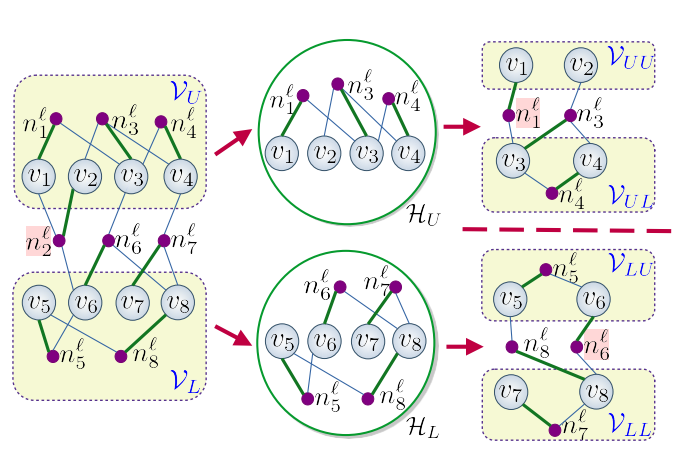
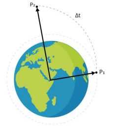
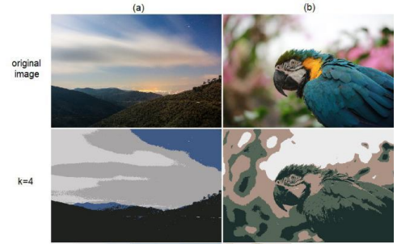
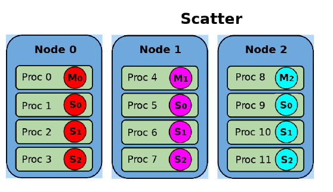
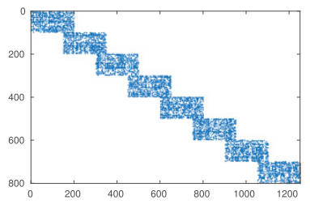
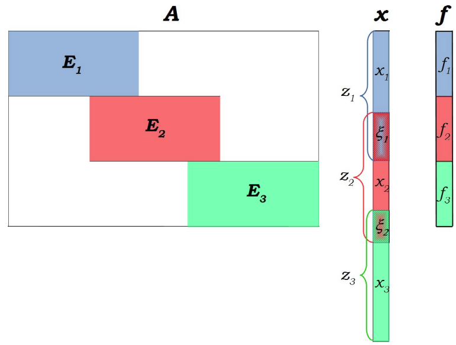
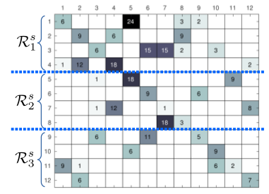
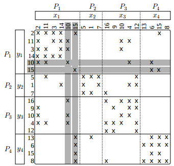

Asst. Prof. at Ankara Yildirim Beyazit University in
Computer Engineering Department.
email: ftorun at ybu.edu.tr,
fsukrutorun@gmail.com
|
Partitioning and Reordering for Spike-Based Distributed-Memory Parallel Gauss-Seidel
Gauss--Seidel (GS) is a widely used iterative method for solving sparse linear sys-tems of equations and also known to be effective as a smoother in algebraic multigrid methods.Parallelization of GS is a challenging task since solving the sparse lower triangular system in GSconstitutes a sequential bottleneck at each iteration.
We propose a distributed-memory parallel GS(dmpGS) by implementing a parallel sparse triangular solver (stSpike) based on the Spike algorithm.
More
|
 |
Parallel solution of Lambert’s problem using modified Chebyshev-Picard iteration method
Lambert’s problem is one of the classical methods for solving the multiple revolution problem in orbit determination.
With the increasing interest in space exploration programs and using satellite networks, it is important to provide an accurate and rapid method that will provide the network control center with information regarding the orbit of each satellite in the network and help the satellites improve routing decisions in onboard processing satellites.
More
|
 |
Parallel K-means Clustering With Naïve Sharding for Unsupervised Image Segmentation via MPI
In digital image processing, image segmentation is an essential step in which an image is partitioned into groups of pixels.
K-means clustering algorithm, which is often considered as fast and efficient, is one of the most widely used clustering algorithms to segment an image.
More
|
 |
Improving the scalability of the ABCD Solver with a combination of new load balancing and communication minimization techniques
The hybrid scheme block row-projection method implemented
in the ABCD Solver is designed for solving large sparse unsymmetric
systems of equations on distributed memory parallel computers. The
method implements a block Cimmino iterative scheme, accelerated with
a stabilized block conjugate gradient algorithm. An augmented pseudodirect variant has also been developed to overcome convergence issues.
More
Conference Program |
 |
Parallel Minimum Norm Solution of Sparse Block Diagonal Column Overlapped Underdetermined Systems
Underdetermined systems of equations in which the minimum norm solution needs to be
computed arise in many applications, such as geophysics, signal processing, and
biomedical engineering. In this article, we introduce a new parallel algorithm for
obtaining the minimum 2-norm solution of an underdetermined system of equations.
The proposed algorithm is based on the Balance scheme, which was originally developed
for the parallel solution of banded linear systems.
The proposed scheme assumes a
generalized banded form where the coefficient matrix has column overlapped block
structure in which the blocks could be dense or sparse.
More
|
 |
Solving Sparse Underdetermined Linear Least Squares Problems on Parallel Computing Platforms
Computing the minimum 2-norm solution is essential for many areas such as geophysics, signal processing and biomedical engineering.
In this work, we present a new parallel algorithm for solving sparse underdetermined linear systems where the coefficient matrix is block diagonal with overlapping columns.
The proposed parallel approach handles the diagonal blocks independently and the reduced system involving the shared unknowns.
Experimental results show the effectiveness of the proposed scheme on various parallel computing platforms.
Slides |
 |
A Novel Partitioning Method for Accelerating the Block Cimmino Algorithm
We propose a novel block-row partitioning method in order to improve the convergence rate of the block Cimmino algorithm for solving general sparse linear systems of equations.
The convergence rate of the block Cimmino algorithm depends on the orthogonality among the block rows obtained by the partitioning method.
The proposed method takes numerical orthogonality among block rows into account by proposing a row inner-product graph model of the coefficient matrix.
In the graph partitioning formulation defined on this graph model, the partitioning objective of minimizing the cutsize directly corresponds to minimizing the sum of inter-block inner products between block rows thus leading to an improvement in the eigenvalue spectrum of the iteration matrix. This in turn leads to a significant reduction in the number of iterations required for convergence.
Extensive experiments conducted on a large set of matrices confirm the validity of the proposed method against a state-of-the-art method.
Paper
|
 |
Minimizing Communication Through Computational Redundancy in Parallel Iterative Solvers
Sparse matrix vector multiplication (SpMxV) of the form y = Ax is a kernel operation in iterative linear solvers used in scientific applications. In these solvers, the SpMxV operation is performed repeatedly with the same sparse matrix through iterations until convergence. Depending on the matrix and its decomposition, parallel SpMxV operation necessitates communication among processors in the parallel environment. The communication can be reduced by intelligent decomposition. However, we can further decrease the communication through data replication and redundant computation. The communication occurs due to the transfer of x-vector entries in row-parallel SpMxV computation. The input vector x of the next iteration is computed from the output vector of the current iteration through linear vector operations.
More
|
 |
Numerically aware partitioning for Block CimminoSource code for numerically aware row-block partitioning for Block Cimmino Iterative method in ABCD Solver is source code is distributed under the GNU Lesser General Public License. This is a simplified C++ implementation of the work that is published in SIAM SISC 2018. >> GRIP (Row Inner-Product Graph partitioner for ABCD) version 1.1 << |
ParBaMiN: Parallel Balance Scheme Algorithm for Minimum Norm Solution of Underdetermined Systems
A distributed parallel algorithm for solving minimum 2-norm solution of an underdetermined system on distributed memory high performance computing (HPC) platforms. This software is implemented in C++ programming languages and it uses MPI library for communication among processors.
Each processor concurrently and independently applies QR factorization on the sub-matrices. Sparse QR factorization of SuiteSparse (www.suitesparse.com) package is used in local sparse QR factorization operations.
The performance of the proposed method may increase by adding the parallelism mechanisms of multi-threaded SuiteSparseQR and multi-threaded BLAS for the local QR factorizations.
This algorithm can be considered as an scalable extension of any multithreaded general sparse QR factorization algorithm
to distributed memory architectures for computing minimum 2-norm solution of underdetermined linear least squares problems.
ParBaMiN |
ParBaMiN_matlab: A Sequential MATLAB program for Parallel Balance Scheme Algorithm for Minimum Norm Solution of Underdetermined Systems
A simple MATLAB program for the solving Minimum Norm Solution of Sparse Block Diagonal Column Overlapped Underdetermined Systems.
It is a sequential version of Parallel Minimum Norm Solution of Sparse Block Diagonal Column Overlapped Underdetermined Systems.
Sparse QR factorization with Householder reflection of spqr routine in SuiteSparseQR package is used in local sparse QR factorization operations.
ParBaMiN_matlab |
EoCoE: Energy oriented Centre of ExcellenceThe project coordinates a pan-European network covering 21 teams in 8 countries with a total budget of 5.5 M€. EoCoE assists the energy transition via targeted support to four renewable energy pillars: Meteo, Materials, Water and Fusion. These four pillars are anchored within a strong transversal multidisciplinary basis providing high-end expertise in applied mathematics and HPC. |
| Courses Given: |
Fall 2019-2020:
|
Spring 2018-2019:
|
Fall 2018-2019:
|